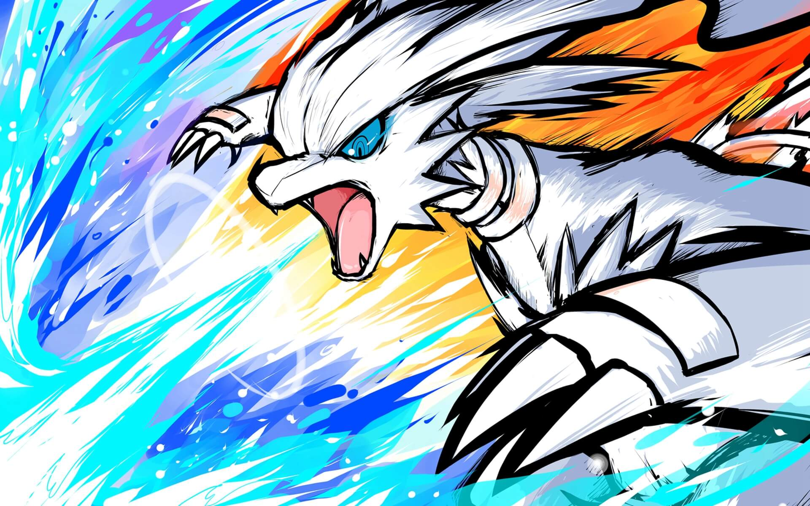
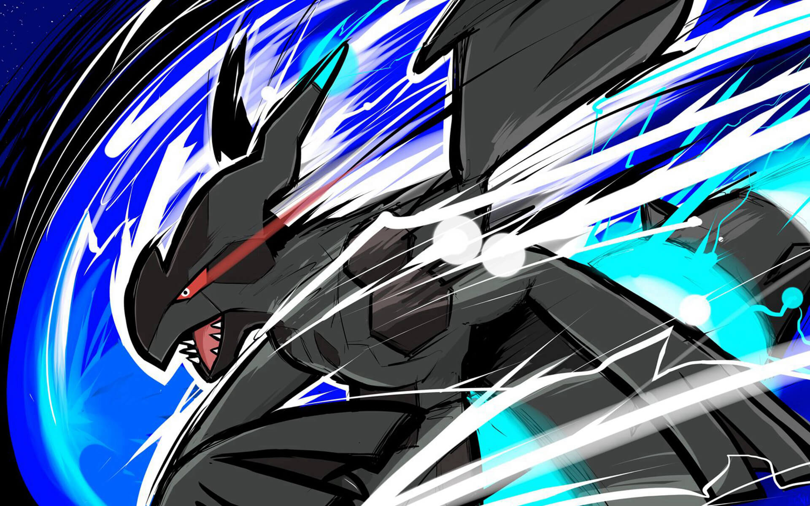
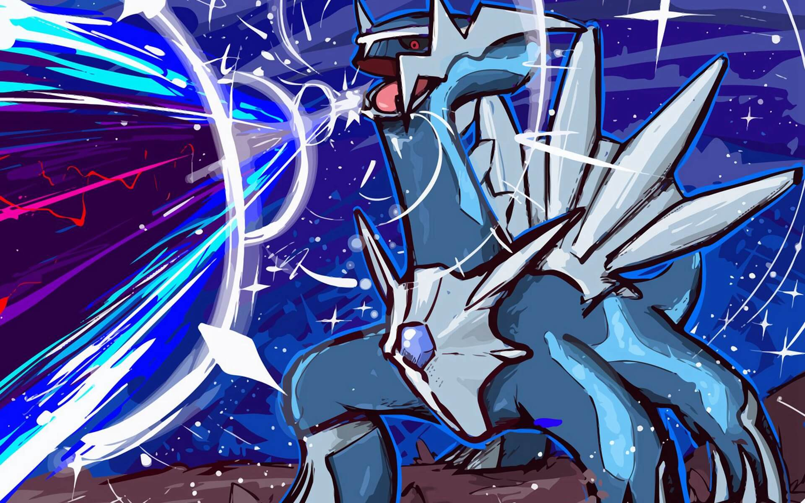
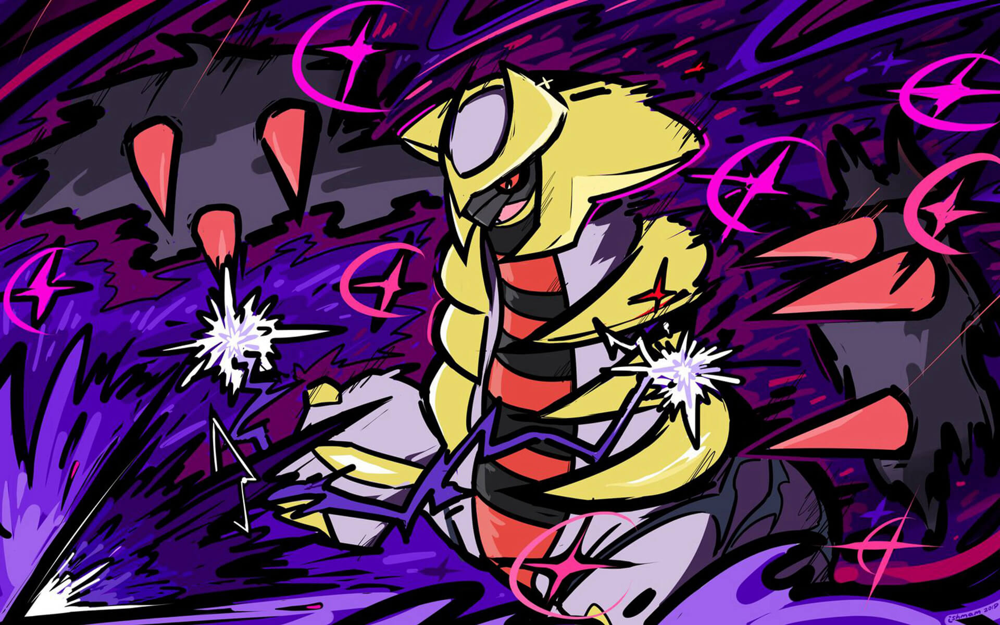

体验范围
寻找
捕捉
孵化
对战
宝可梦介绍

耿鬼
耿鬼十分顽皮，有时甚至很凶恶。它们喜欢恶作剧，比如装作别人的影子，然后做出和人不一样的动作。当它的猎物注意到时，耿鬼就因为其受害者的恐惧而欢喜起来。然而耿鬼也众所周知地忠实于善待它的训练家，当训练家对它很好的时候，它的笑容就不会那么阴险而是更友善。耿鬼生活在房屋、洞穴的阴影里以及像阴影一样的黑暗地方，尤其是在城市区域，例如在夜晚它们会出现在大城市中的陋巷。耿鬼也生活在山地，它一般来说和鬼斯与鬼斯通有相同的存在区域。野生耿鬼的出现也并非是闻所未闻的。
耿鬼有完全隐藏在任何物体的影子里面的能力，这使它非常善于隐身。耿鬼的身体像个吸热器，它的存在使得周边的温度降低了大概5°C，因为它带走了热量。耿鬼能在空中飞行，就像松叶的耿鬼呈现的那样。耿鬼能把大量的物品装在身体里随身携带，它的身体宛若一个黑洞，东西被它装进身体后就会消失不见。

卡比兽
卡比兽进食以外的时间都在睡觉。因为平常是温顺的宝可梦，所以也有小孩子把它肥大的腹部当成游乐场。但是如果在它睡觉时吵醒它，它会大发脾气以表达自己的不满。若1天没有吃下400公斤的食物，便会感到难过。进食完毕后便会入睡。
很喜欢吃荆棘。
野外的卡比兽喜欢吃树果。为了可以吃到树果愿意在自然成熟掉落之前在树下一直等候。
卡比兽栖息在山区和丛林中。睡觉以外的时间一直在吃东西。卡比兽的胃非常强壮。不管是怎样的毒都可以用胃液消化，因此吃下腐烂的东西也没有问题。 一天里不吃400公斤的东西不会吃饱。性格温顺到可以让小孩子们把大大的肚子当游乐场的宝可梦。

百变怪
百变怪浑身都是稍淡的紫色。它拥有一双小小的黑眼睛，身体软而富有弹性。睡觉的时候变成石头防止被袭击。两只百变怪相遇的时候，为了能变成和对方一模一样的样子而比平常更剧烈地动作。
可以通过改变自身的细胞组合并复制一切被复制对象的细胞组合而幻化为对方的样子，甚至可以使用对手的技能。在游戏里变身能力是近乎完美的。

可达鸭
可达鸭是有鸭嘴兽外貌特征的宝可梦。可达鸭的身体是黄色的，它的眼睛里有极小的瞳孔。它的嘴巴是扁状的，头上有三条黑色的呆毛，四肢短壮，酷似河童。它有短小的尾巴和有蹼的脚掌。可达鸭平时经常头痛，这使它经常忘记事情。可达鸭完全不具有进攻性，神情经常处于呆滞状态。由于不受控制的念力力量，可达鸭经常头痛到流泪。
当头痛达到某种程度时可以使出念力和石化功，隐藏着不可思议的能力，但使用时的力量不会留下来。另外，作为水属性宝可梦，它还能学会水炮等水属性招式和冰属性招式。
新闻动态